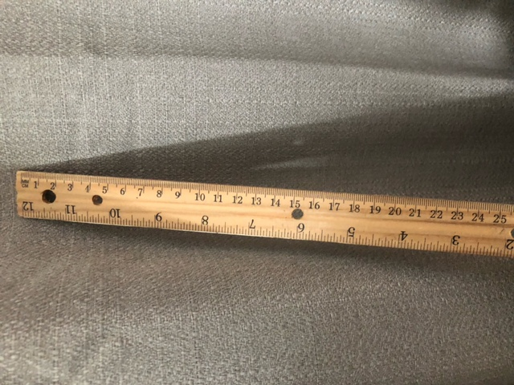
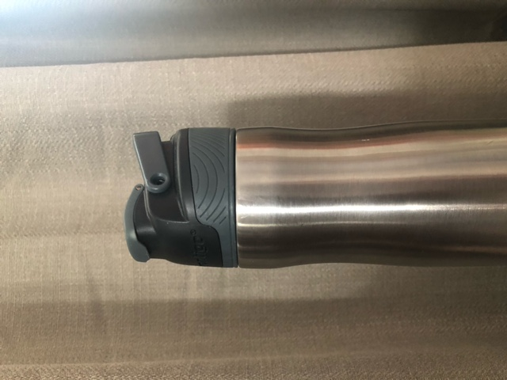
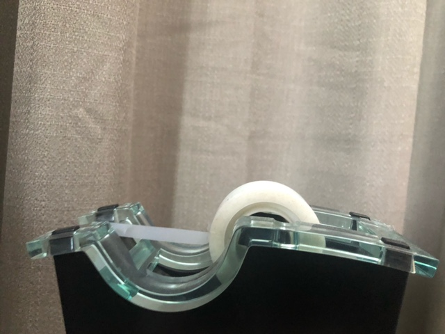
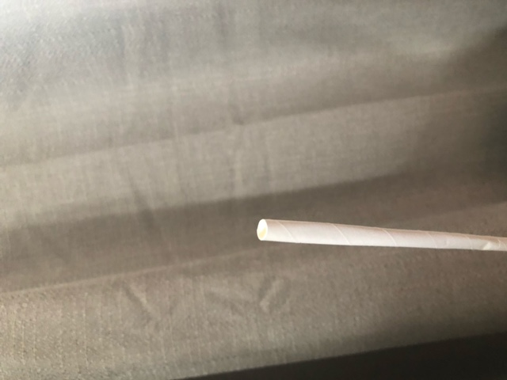
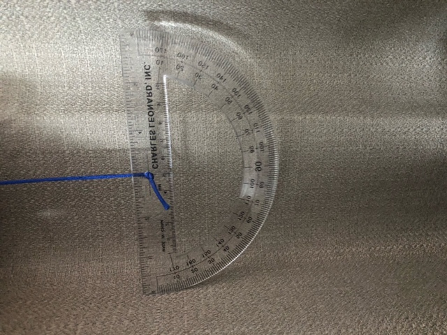
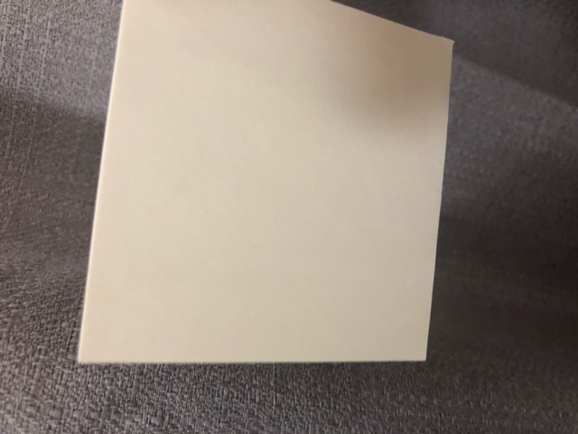
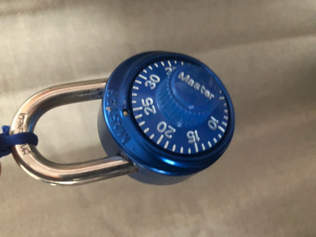
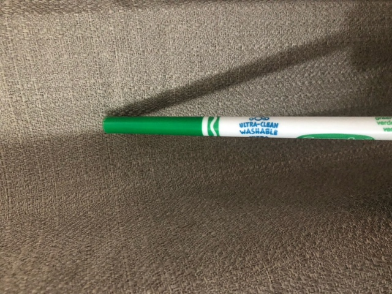
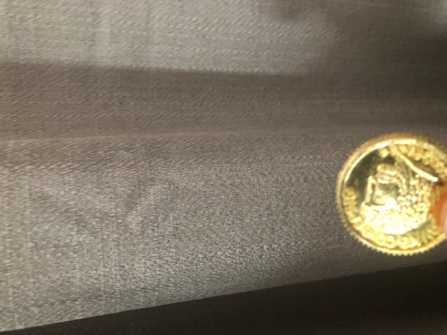
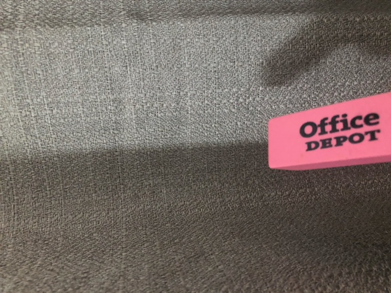

Case Study
Hello we are doing a case study between
Google lens
and
MobileNet
Also look down at the bottom of the page to see which is better
-
Test case image - 1

Output for Google lens - In Google Lens it gave me shopping results, and asked me to take a picture of the object, all the shopping results were basically a ruler but still, it didn't really recognize it
Output for MobileNet - MobileNet concluded many things at some point it said 94% ruler, but other times it said it was a flute
Result -
In my opinion MobileNet was able to recognize it better
-
Test case image - 2

Output for Google lens - It gave me shopping results, but the shopping results were the exact same waterbotel and it told me the company of the bottle which in this case was contigo
Output for MobileNet - Most of the time it said that this waterbotel was a fountain pen
Result -
In this case, Google lens definitely won
-
Test case image - 3

Output for Google lens - It gave me more jewlery results than tape results
Output for MobileNet - MobileNet concluded that it was a electric guitar
Result -
In this case Mobilenet gave some tape shopping options, so I would say that Google Lens wins
-
Test case image - 4

Output for Google lens - Google lens thought it was a tube
Output for MobileNet - MobileNet concluded that it was a syringe
Result -
A tube is more similar to a straw than a syringe so Google Lens won
-
Test case image - 5

Output for Google lens - It gave me protractor shopping results
Output for MobileNet - MobileNet thought that it was a ruler
Result -
Because it gave me protractor shopping results I say that Google lens win
-
Test case image - 6

Output for Google lens - Google lens gave me a list of shopping, which was brown paper, and small paper notebooks
Output for MobileNet - MobileNet thought it was a punching bag
Result -
Google lens won as it recognized it as paper
-
Test case image - 7

Output for Google lens - Google Lens game me shopping results for a Master lock
Output for MobileNet - MobileNet guessed very accurately that it was a combination lock with 99% accuracy
Result -
Both did phenomanaly wel when trying to recognize what it was, but MobileNet recognized that it was a combination lock, instead of giving shopping results
-
Test case image - 8

Output for Google lens - Google Lens was able to see that it was a crayola green marker thus giving me lots of shopping results
Output for MobileNet - MobileNet concluded that it was a ballpoint pen
Result -
Google Lens won because of how it was able to see the company and the color
-
Test case image - 9

Output for Google lens - Google Lens guessed that it was a real coin
Output for MobileNet - MobileNet guessed that it was a thimble or combination lock
Result -
Their is no doubt about it Google lens obviously wins as it was able to tell that it was a coin
-
Test case image - 10
